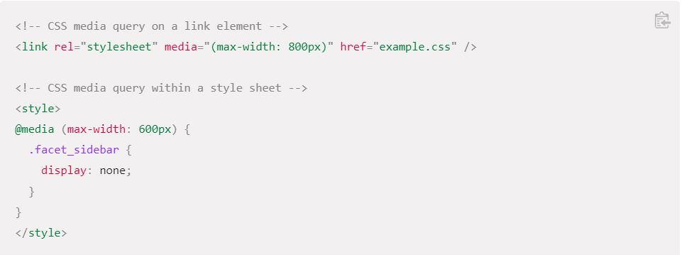

Sintanxis
Las media queries consisten de un tipo de medio opcional y una o más expresiones de características de medios. Varias consultas se pueden combinar utilizando operadores lógicos. No distinguen entre mayúsculas y minúsculas. El resultado de la consulta es "verdadero" cuando el tipo de medio (si se especifica) coincide con el dispositivo en el que se está mostrando el documento y todas las expresiones en el media query son "verdaderas". En este caso, se aplica los estilos correspondientes, siguiendo las reglas usuales de cascada. Las consultas sobre tipos de medios desconocidos son siempre falsas.
Media Types
Los Media Types (tipos de medios) describen la categoría general de un dispositivo.
Excepto cuando se utilizan los operadores lógicos not o only, el tipo de medio es opcional y será interpretada como all.
all
apto para todos los dispositivos.
print
Destinado a material impreso y visualización de documentos en una pantalla en el modo de vista previa de impresión.
screen
Destinado principalmente a las pantallas
speech
Destinado a sintetizadores de voz
Operadores Lógicos
Se pueden redactar queries utilizando operadores lógicos, incluyendo not, and, y only.
El operador and es usado para colocar juntas múltiples funciones multimedia. Un query básico con el tipo de medio especificado
Además se puede combinar múltiples queries en una lista separada por comas múltiples; si cualquiera de las queries
en la lista es verdadera, la hoja de estilo asociada es aplicada. Esto es equivalente a una operación lógica "or".